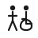

Estacionamientos
Parqueadero principal junto a la garita de control y parqueadero alto junto al refugio.
El parque cuenta con servicios básicos pensados para recibir a visitantes con distintas necesidades de movilidad. Cada tarjeta incluye un botón con el detalle completo del servicio.
Parqueadero principal junto a la garita de control y parqueadero alto junto al refugio.

Baterías sanitarias con cubículo adaptado para silla de ruedas en el centro de visitantes.
Áreas con bancas y mesas techadas distribuidas junto a los principales senderos.
Espacios habilitados para acampar cerca de la laguna de Limpiopungo, con reserva previa.